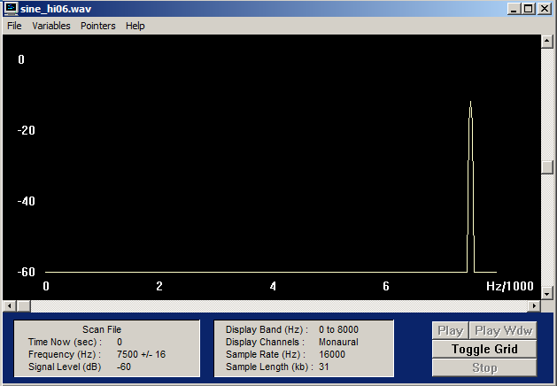
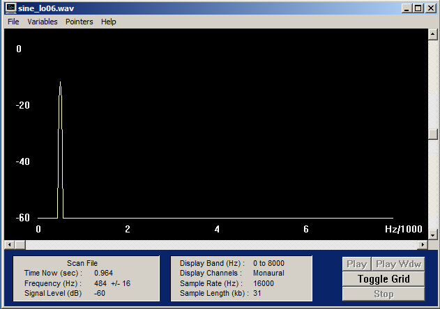
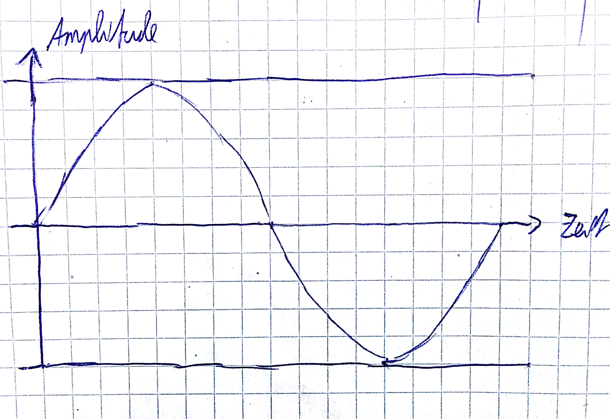
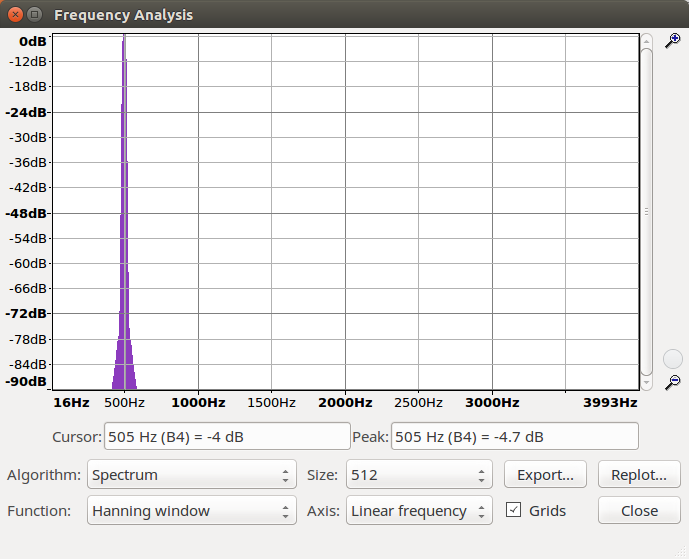
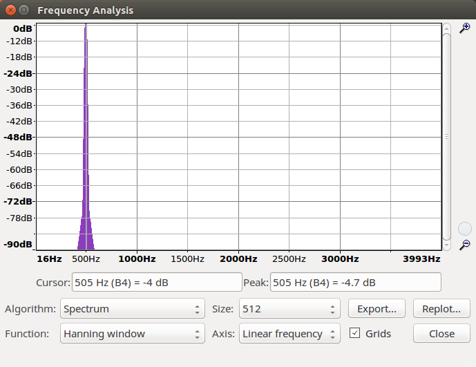
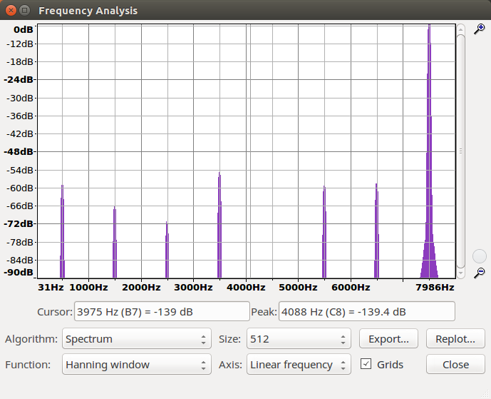
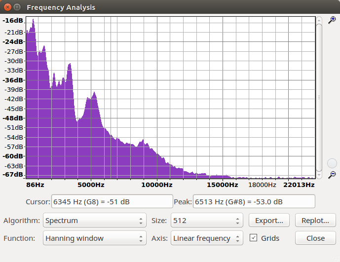
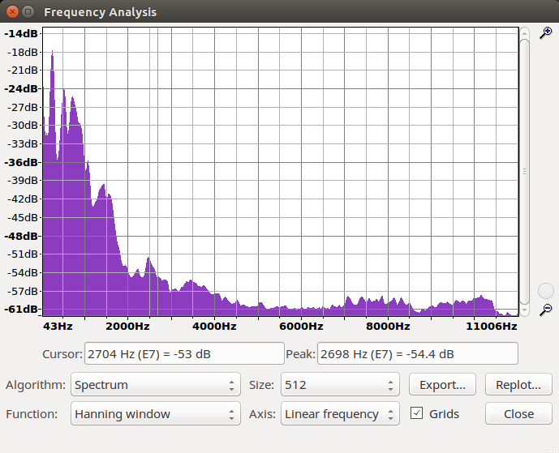
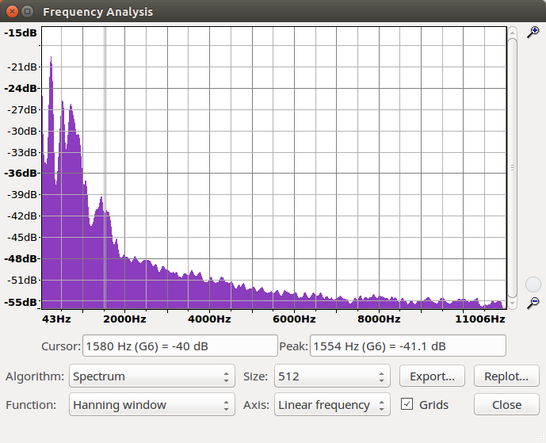

Erzeuge zwei kurze Audio-Files (max. 5 s), davon eines mit Musik deiner Wahl aus dem Internet (wobei sich Musik mit einer relativ hohen Dynamik, d.h. Wechsel zwischen relativ leisen und lauten Abschnitten empfiehlt). Wähle eine geeignete Abtastfrequenz (begründen !) und achte auf gute Aussteuerung. Das zweite Audio-File soll eine Sprachaufnahme (mit dem Headset aufgesprochen) enthalten (Übersteuerung vermeiden !). Wähle hier eine Abtastfrequenz von 22 kHz, 16 bit Auflösung, mono. Die Einstellungen wie Abtastrate, Bitzahl und Kanalzahl können im Wavestudio Samplitude vorgenommen werden. Die Eingangsquelle (wahlweise Audio-CD oder Mikrofon) kann im Windows-Mixer 'Aufnahme' eingestellt werden. Benenne die Dateien "Musik_NameArbeitsgruppe.wav" und Sprache_NameArbeitsgruppe.wav". Schick mir die beiden WAV-Dateien unter Nennung deiner Arbeitsgruppe per Mail. In den folgenden Übungen wirst du diese Dateien oft als Ursprungssignale verwenden. Sollten sie verloren gehen, kannst du sie notfalls wieder von mir erhalten. Darauf werde ich dir zwei WAV-Dateien mit Testsignalen zusenden, die du bei den folgenden Aufgabenpunkten benötigst, sine_hiXX.wav und sine_loXX.wav. Nun lies die Musik- und die Sprachdatei mit wave_io ein und erkläre die Angaben im Header ! Wie hoch ist die Bitrate für die beiden Dateien?
Lösung: Aufschlüsselung der Header-Angaben
Channels: 2 - Anzahl der Kanäle: 1 = mono, 2 = stereo
Frames: 223921 - Anzahl der Frames in der Datei
Sample Rate: 44100 - Samples pro Sekunde je Kanal, Abtastrate in Hz
Valid Bits: 16 - Anzahl der gültigen Bits
Bytes per sample : 2
Wie hoch ist die Bitrate für die Dateien 'Datei Musik', 'Datei Sprache'?
Sample Rate * Valid Bits = 22050×16 = 352800 Bit/s
Modifiziere wave_io dahingehend, dass die Samples in der WAV-Datei in eine (lesbare) ASCII-Datei geschrieben werden. Lies die von mir geschickten Dateien (Sampling-Frequenz : 16 kHz) ein und bestimme aus den resultierenden Zahlenfolgen in der ASCII-Datei die Frequenz der Sinus-Schwingungen (Begründen und jeweils eine Periode für das Protokoll abspeichern). Überprüfe Deine Schätzung mit dem Spektralanalyse-Tool GRAM
Lösung: Die Frequenz der Sinus-Schwingung von sine_hi06 beträgt unserer Einschätzung nach f0 = 16000 / 2.1 = 500 Hz da sich alle 2.1 Abtastpunkte Maxima und Minima abwechseln.
Werte (sine_hi06.wav): 16305, -15679, 14449, -12665, 10394, -7723, 4756, -1606, -1606, 4756, -7723, 10394, -12665, 14449, -15679, 16305, -16305, 15679, -14449, 12665, -10394, 7723, -4756, 1606, 1606...

Die Frequenz der Sinus-Schwingung von sine_lo06 beträgt unserer Einschätzung nach f0 = 16000 / 32 = 500 Hz da sich alle 32 Abtastpunkte Maxima und Minima abwechseln.
Werte (sine_lo06.wav): 1606, 4756, 7723, 10394, 12665, 14449, 15679, 16305, 16305, 15679, 14449, 12665, 10394, 7723, 4756, 1606, -1606, -4756, -7723, -10394, -12665, -14449, -15679, -16305, -16305

Bei der zeitlichen Diskretisierung eines Analogsignals muß das sogenannte Abtasttheorem eingehalten werden. Wie lautet es und wie läßt sich der Grenzfall, für den es gerade noh gilt, illustrieren (Zeichnung !)?
Lösung: Das Abtasttheorem besagt, dass bei der Analog/Digital-Wandlung die Abtastfrequenz mehr als doppelt so hoch sein muss wie die höchste Frequenz des zu digitalisierenden analogen Signals.

Bei herkömmlichen Soundkarten tritt system bedingt kein Aliasing auf, weil das Audiosignal stets geeignet vorbehandelt wird (wie ?). Mit einem kleinen Trick läßt sich Aliasing jedoch nachweisen. Diese auch als Down-Sampling bekannte Methode besteht darin, dass man bei einer WAV-Datei z.B. jeden zweiten Abtastwert wegwirft. Man erhält so eine Wellenform, die genau die Hälfte der ursprünglichen Abtastfrequenz aufweist. Wenn man das Signal nicht vorher bandbegrenzt hat, können Aliasing- Verzerrungen hörbar werden.
Lösung: Aliasing wird bei herkömlichen Soundkarten durch den Einsatz von Tiefpassfiltern verhindert. Das Abtasttheorem wird eingehalten in dem Frequenzen größer als fa/2 herausgefiltert werden.
Modifiziere wave_io dahingehend, dass vom eingelesenen Signal jeder zweite Abtastwert verworfen wird und das resultierende Signal abgespeichert wird. Der Header muß natürlich entsprechend verändert werden! Wende das resultierende Programm zunächst auf 'sine_lo.wav' und 'sine_hi.wav' an. Welche Frequenzen erscheinen nach dem Down-Sampling (Spektrogramm und WAVs ins Protokoll !)? Was würde passieren, wenn man geeignet bandbegrenzen würde?
Lösung: Nach dem Downsampling von sine_hi06.wav werden die Frequenzen in tiefere Frequenzbereiche verschoben. Laut dem Spektogram hat sich die Frequenz von 7986 Hz auf 500 Hz verringert. Somit entsteht ein Aliasing-Effekt.
Werte (sine_hi06.wav): 16305, -15679, 14449, -12665, 10394, -7723, 4756, -1606, -1606, 4756, -7723, 10394, -12665, 14449, -15679, 16305, -16305, 15679, -14449, 12665, -10394, 7723, -4756, 1606, 1606, -4756, 7723, -10394, 12665, -14449
sine_hi.wav

Laut dem Spektogram nach dem Downsampling von sine_lo06.wav hat sich die Frequenz nicht verändert.
Werte sine_lo06.wav: 1606, 4756, 7723, 10394, 12665, 14449, 15679, 16305, 16305, 15679, 14449, 12665, 10394, 7723, 4756, 1606, -1606, -4756, -7723, -10394, -12665, -14449, -15679, -16305, -16305, -15679, -14449, -12665, -10394, -7723, -4756, -1606, 1606, 4756, 7723, 10394, 12665, 14449, 15679, 16305, 16305, 15679, 14449, 12665, 10394, 7723, 4756, 1606
sine_hi06.wav

Die herkömmlichen PC-Soundkarten arbeiten meist entweder mit 16 oder 8 bit-Auflösung. Wie groß ist die Anzahl der bei diesen beiden Werten darstellbaren Amplitudenwerten ?
Lösung: Bei der 16-bit Auflösung können die Amplitudenwerte 216 = 65536 sein. Bei der 8-bit Auflösung können die Amplitudenwerte 28 = 256 sein.
Wir wollen nun wave_io so modifizieren, dass wir die Bitzahl reduzieren können. Dazu können wir z.B. alle Samples durch eine Potenz von 2 teilen (Integer-Division ohne Rest). Damit das resultierende Signal nicht leiser wird als das Original, kompensieren wir die Operation durch Multiplikation mit derselben Zweierpotenz. Zu beachten: Der Datentyp hatnach wie vor 16 bit! (Denselben Effekt erreicht man auch durch einfaches logisches 'Verunden' mit einem entsprechenden HEX-Wert, indem man mit dem LSB beginnend Bits 'ausblendet'.)
Lösung: Nach der Bitreduzierung ergibt sich beispielsweie für sine_hi06.wav folgendes:

Mit dem entstandenen Programm verändern wir die in Aufgabe 1 erzeugten Wave-Dateien. Ab welcher Bitzahl tritt bei Musik/Sprache eine hörbare/deutliche Verschlechterung der Qualität ein? Bei wieviel Bit ist das Sprachsignal noch verständlich ? (Waves für all diese Fälle ins Protokoll, Ausschnitte als Plots) Was charakterisiert das entstehende Quantisierungsgeräusch und macht es besonders störend?
Lösung: Bei der Musik Datei stellten wir eine hörbare Verschelchterung bei einer Reduzierung um 8 Bit fest.
Musik Datei 8 Bit

Bei der Sprachdatei erst bei 10 Bit

Verständlich war die Sprache Datei noch bis zu einer Reduzierung um 12 Bit.

Modifiziere Dein Programm noch einmal so, dass auch das Differenzsignal zwischen Original und bitreduziertem Signal, das heißt, das Quantisierungsrauschen ausgegeben werden kann. Welchen Charakter hat das Rauschen bei einer Reduktion um 1 bit, wie verändert es sich bei zunehmender Bit-Reduktion? (Waves für all diese Fälle ins Protokoll, Ausschnitte als Plots)
Musik Datei
Sprache Datei
Lösung: Bei zunehmender Bitreduktion wird das Differenzsignal dem Originalsignal änlicher, wobei bei einer Reduktion um 1 bit ist das Differenzsignal mehr intensiv.